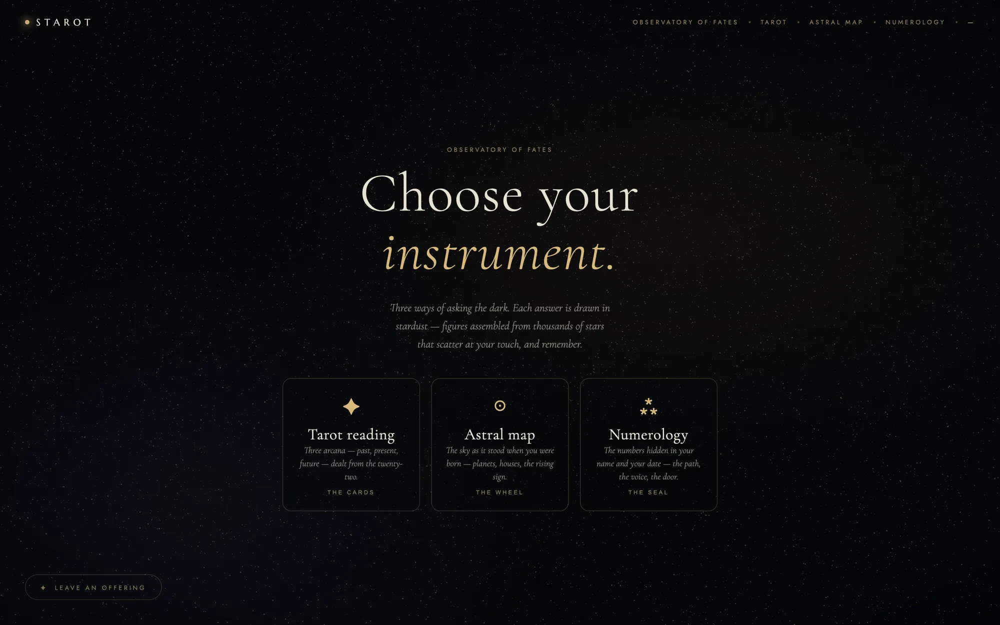
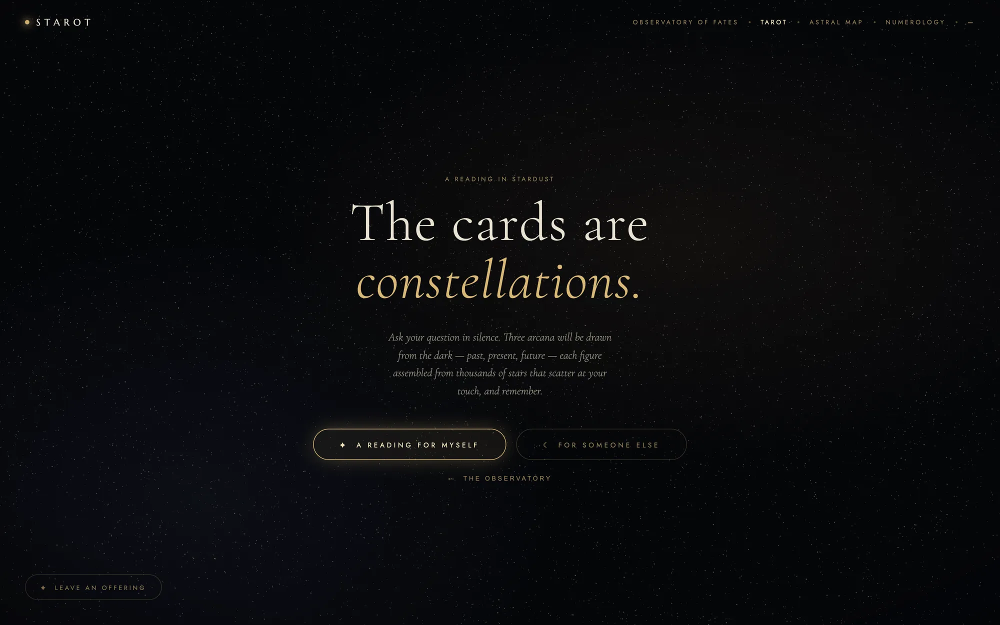
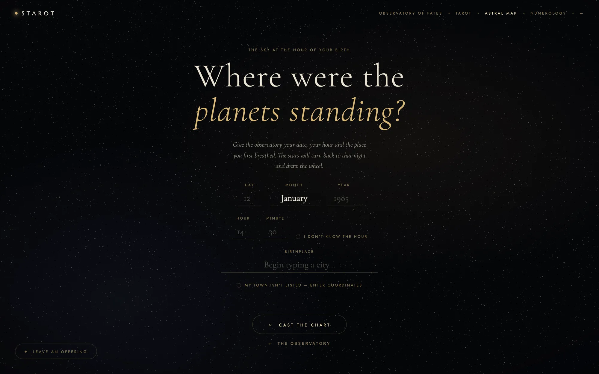
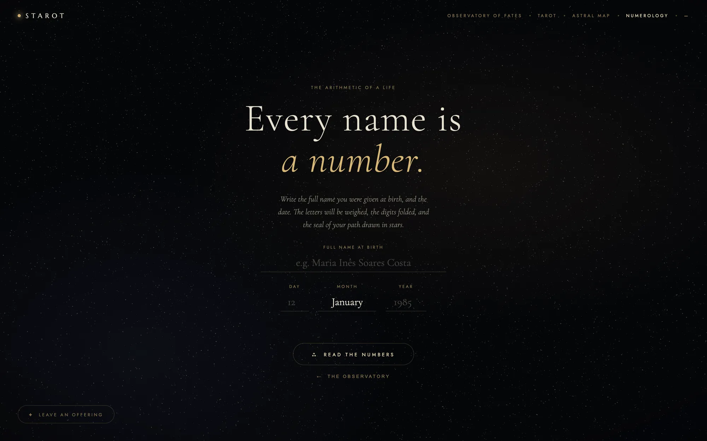

STAROT
Três formas de perguntar ao escuro. Seja qual for a pergunta, a resposta é desenhada pelas estrelas a reunirem-se numa figura.

Um motor WebGL segura 52 000 estrelas que cintilam e rodam devagar, como um universo vivo. Cada resposta — uma carta de tarot, uma roda natal, um selo numerológico — nasce das estrelas a reunirem-se numa figura.
O cursor é uma pequena lente que abre e agita o enxame. Quando o soltas, tudo volta a assentar.
Por baixo da poesia, rigor: o mapa astral calcula no próprio browser o Sol, a Lua e os oito planetas, o Ascendente, o Meio-do-Céu e as casas Placidus, a partir da teoria solar de Meeus e de elementos keplerianos da JPL. Tudo num único ficheiro, sem dependências.





- 52 000estrelas num só motor WebGL
- 22Arcanos Maiores com leituras escritas para esta edição
- ~170cidades para calcular o mapa natal
Próximo projeto — 03
MiKS